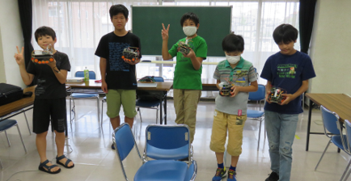

2023/08/20 午前と午後の２回開催
第54,55回 リズムゲーム＆完成ラズタンク試走
午前のScratch共通テーマでプログラミングは「リズムゲーム」をみんなで制作。午後はカメラ実装と動画表示を完成させてラズタンクをリモート運転する試走会を開催。
本日の青梅Dojo出欠確認です
ニンジャの申し込みは午前19名・午後5名の延べ24名。保護者家族11名、メンター9名の延べ44名が参加してくれました。
最初はオリエン。今日のテーマと参加者を紹介します。
午前ワークショップ（Scratchプログラミング入門・初級）
午前はレベル別に４ブロックに分かれてワークショップを行います。
１．はじめて参加するニンジャ向け入門プログラミング
中学生ユースメンターのはやと君は、入門コースのベテラン講師です
２．みんなで同じScratchテーマによるレベルアップ講座
今月はメンター「たつき」さん考案の「リズム・ゲーム」制作にチャレンジ
３．自分でテーマを決めてがんばる初中級プログラミング
いつものScratch作品づくりはもちろん。自宅で制作したクランク機構、大きなＡボタン、様々な形のLEDも発表してくれました。
４．オンラインも同時開催。
遠方からの参加者も一緒に「リズム・ゲーム」制作です。
午後ワークショップ（ラズパイと電子工作）
午後はラズタンクを改造するためのラズパイ応用講座。
１．開発者のためのプラットフォーム GitHub
２．レガシーカメラ picamera
３．オブジェクト指向 Object
４．カメラ動画撮影 VideoCapture
５．画像認識AI, OpenCV
６．ラズタンク・リモート運転
これらのコードをラズタンクに組み込んで、基本機能のラズタンクが完成！
岩田メンターによる様々な形のLED。UVレジンで作り方を紹介してくれました。
漆畑メンターは動画での顔認識AIを実践してくれました。みんなにもチャレンジしてほしい
ラズベリーパイ講座の教材サンプル
みんなで、ラズタンクを試走させるぞ
試走前の最終整備です
ラズタンクに付いているカメラを使って、リモートのPC画面で動画を目視できます

選手のみなさん

練習レース・スタート！🏁
次回は9月24日(日)開催です。
お問い合わせのあるCoderDojo青梅の午後の部は、青梅IT未来塾の修了生が参加できます。修了生ではないけれど参加したいという意欲のある子（小５以上）には個別にLinux & Python教室を提供し、そのあとで午後の部に参加しています。それまでは午前のmicro:bitをお勧めします。
Connpassでイベント告知するので、またの参加をお待ちしています。参加申し込みはこちらのConnpassから
 CoderDojo青梅にご質問メールはこちら
CoderDojo青梅にご質問メールはこちら
😃